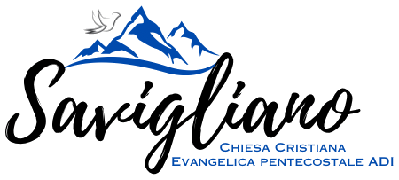
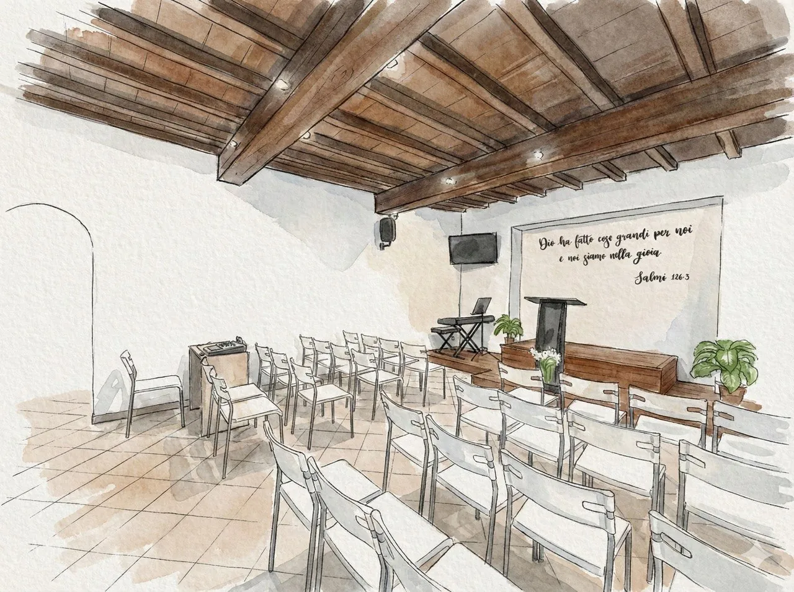

Ti aspettiamo
Siamo una chiesa evangelica a Savigliano. Tutti sono benvenuti: puoi venire anche solo per ascoltare.
È la tua prima volta?
Ti accoglieremo con piacere. Ecco qualche informazione utile.
-
Per i bambini
La domenica c’è la scuola domenicale: con giochi e attività, i bambini scoprono le storie della Bibbia.
-
Parcheggio
Nelle vicinanze trovi parcheggi pubblici.
-
Accessibilità
Per entrare c’è un solo gradino: se hai un passeggino, una sedia a rotelle o fai fatica a camminare, ti aiutiamo volentieri.
Chi siamo
Siamo una comunità cristiana evangelica pentecostale. Ci riuniamo per pregare, lodare Dio e ascoltare la Bibbia, e crediamo che Gesù possa cambiare la vita di chiunque, ancora oggi.
Facciamo parte delle Chiese Cristiane Evangeliche «Assemblee di Dio in Italia» (ADI), presenti in tutta Italia.
Sui nostri social raccontiamo la vita della chiesa: culti, eventi, studi biblici e riflessioni sulla Bibbia. Seguici per restare in contatto con noi.
Restiamo in contatto
Scrivici, chiamaci o seguici sui social.